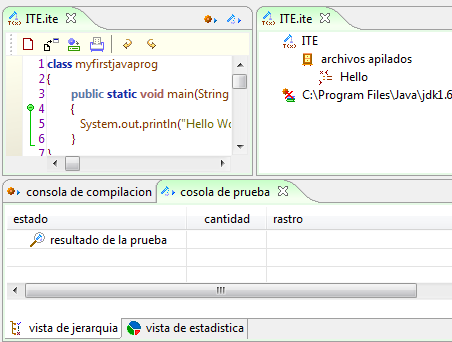
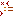
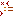
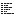
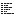
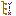
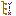

Componente Galeria ITE Miró

Figura 1. Galería ITE en Coloso
La galería Integrated Testing Enviroiment (ITE) Miró toma su nombre el artista Joan Miró (1893-1983), en donde los diferentes elementos de ITE son representados por iconos que recuerdan las obras, formas y colores utilizados por el artista.
El componente ofrece iconos para la identificación de los diferentes comandos del entorno de pruebas de ITE. El componente ofrece elementos para la vista de programación, pruebas, compilación y estadísticas, tal como se muestra en la Figura 1.
El objetivo del componentes es generar un entorno agradable de uso para la herramienta, ofreciendo iconos distintivos y vistozos, que apoyen la creatividad en los procesos de diseño y desarrollo de software.
Estos son algunos de los iconos que se pueden encontrar en la Galería CML Miró.


 


 

 
